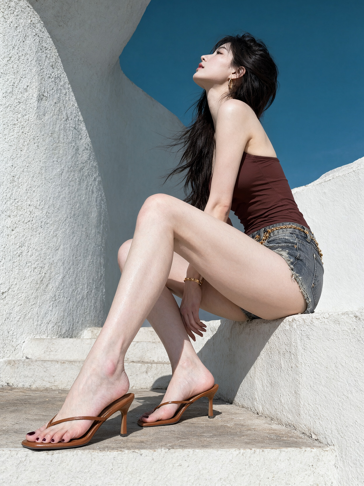
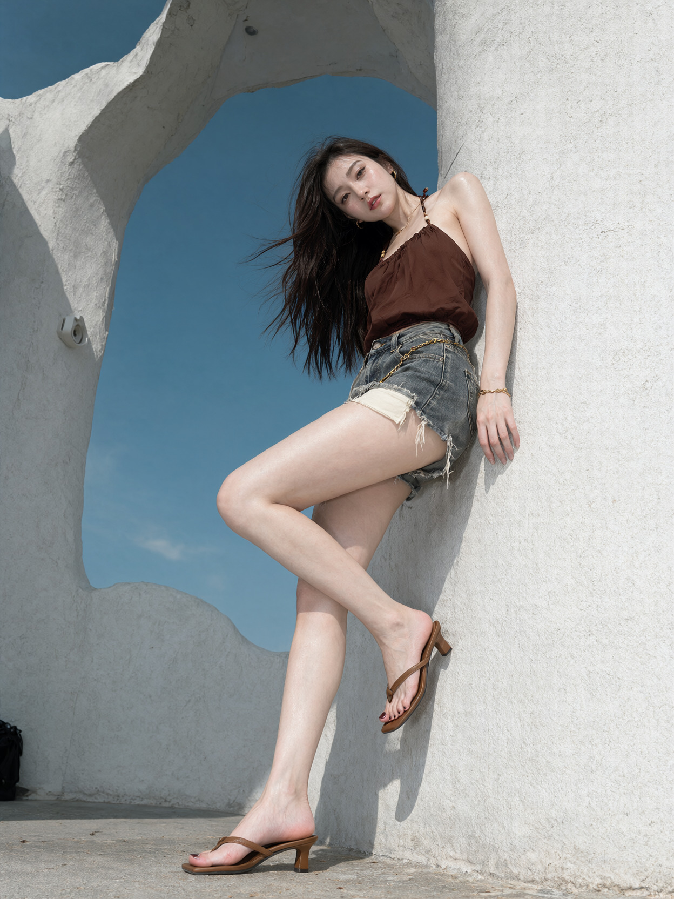

<!doctype html><html lang="zh-CN"><meta charset="utf-8"><style>*{box-sizing:border-box}body{margin:0;width:1800px;background:#12111f;color:#fff;font-family:"Microsoft YaHei",sans-serif;padding:44px}header{margin-bottom:32px}header p{font-size:30px;color:#a8b5d7;margin:0 0 14px}h1{font-size:70px;margin:0;-webkit-text-stroke:4px black;paint-order:stroke fill;line-height:1.3}main{display:grid;grid-template-columns:repeat(2,1fr);gap:28px}figure{margin:0;background:#fff6e7;border:8px solid #fff6e7}figure img{display:block;width:100%;aspect-ratio:3/4;object-fit:contain;background:#fff6e7}figcaption{font-size:44px;font-weight:bold;text-align:center;color:#25244c;padding:18px 0}footer{display:flex;align-items:center;justify-content:space-between;padding:20px 20px 0}footer img{width:200px;height:170px;object-fit:contain}footer span{font-size:30px;color:#a8b5d7}</style><header><p>ONEIRLOOM · 织梦师</p><h1>想怎么拍，就把它说清楚。</h1></header><main><figure><figcaption>从上往下拍</figcaption></figure><figure><figcaption>从脚边往上拍</figcaption></figure><figure><figcaption>坐在台阶上</figcaption></figure><figure><figcaption>靠墙站着</figcaption></figure></main><footer><span>Qwen-Image-2.1 生成 · 2026.10.01</span></footer></html>